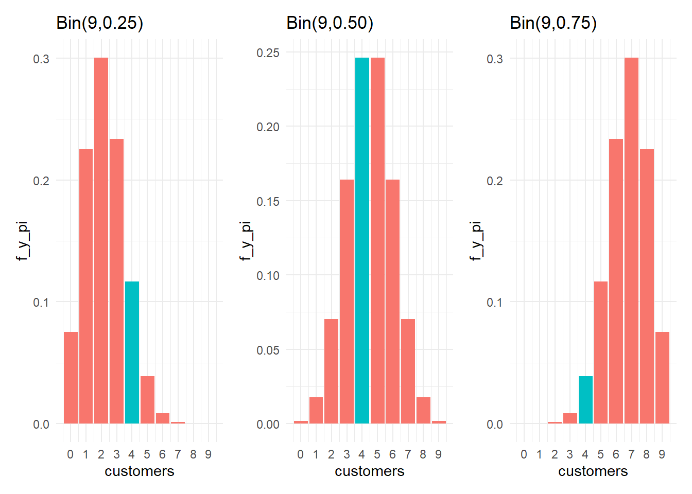
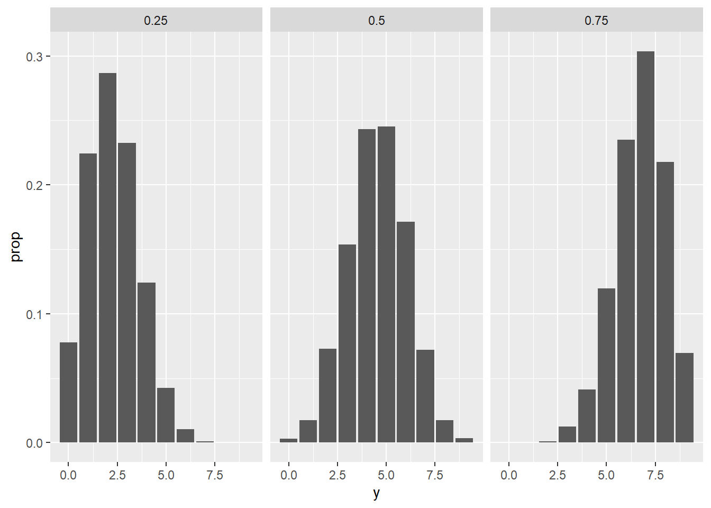
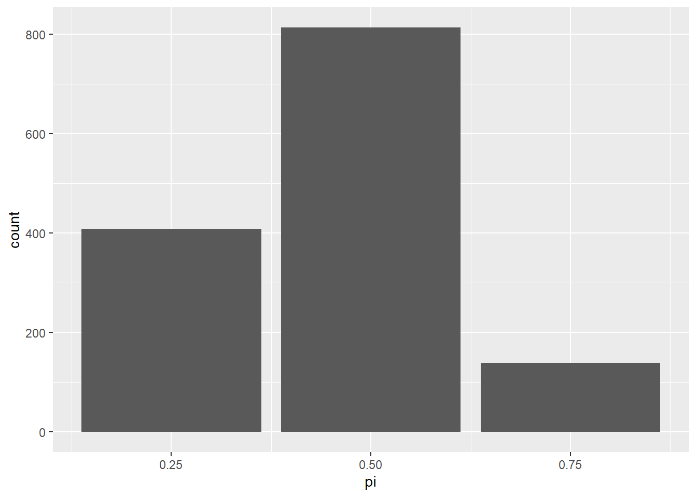
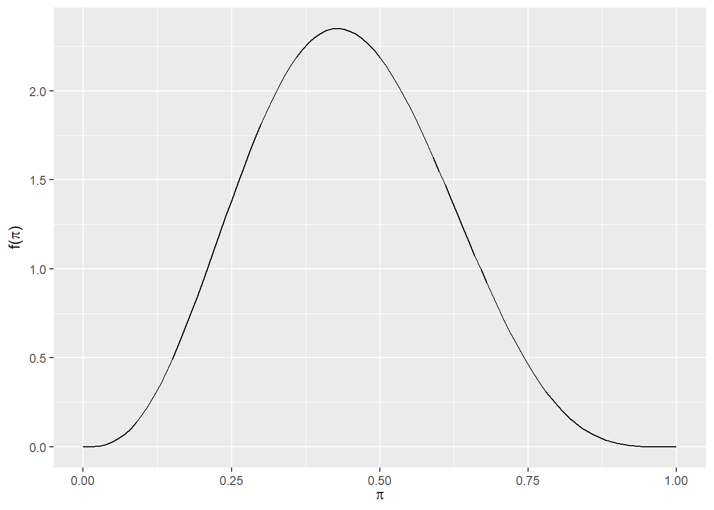
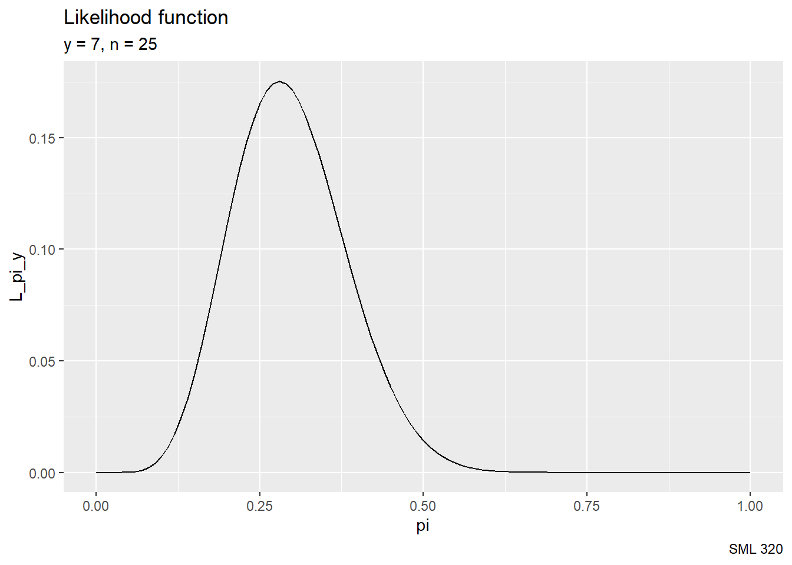
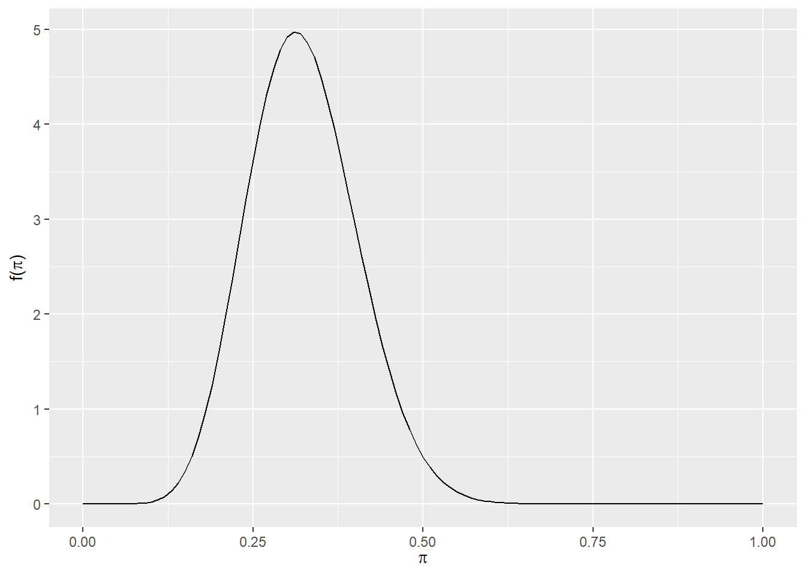
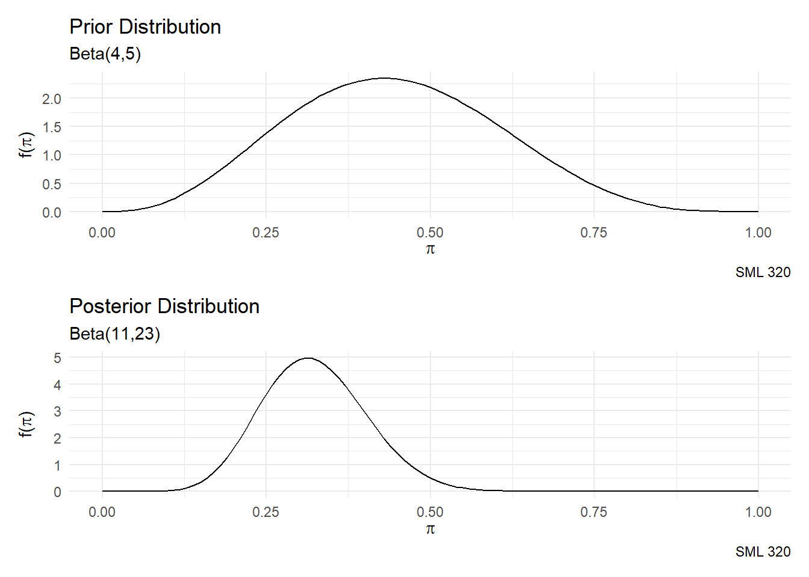
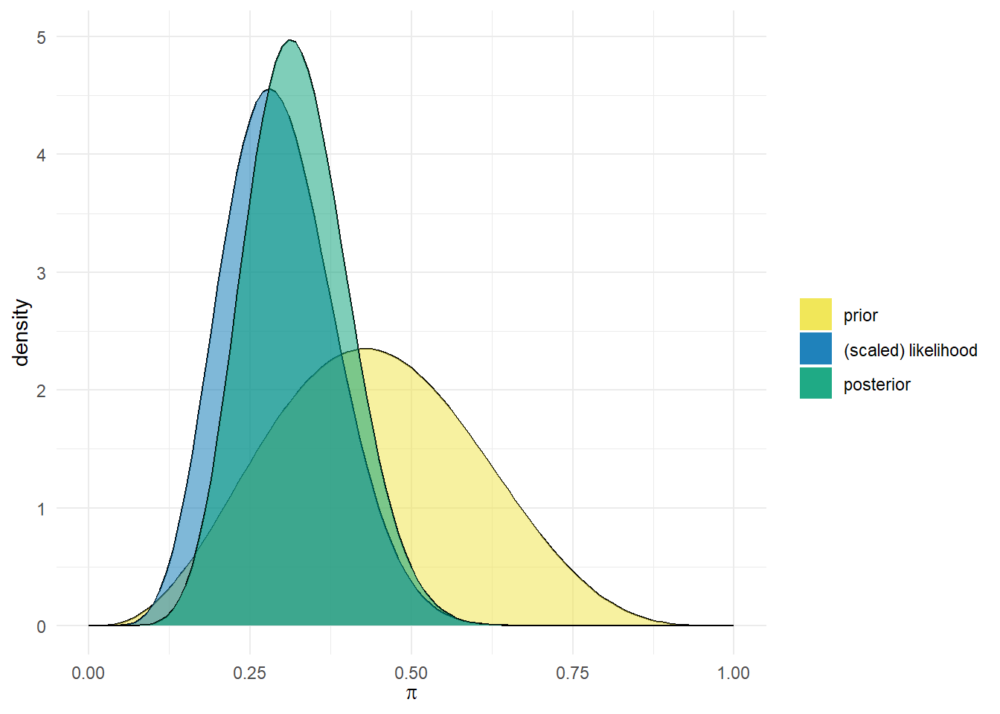
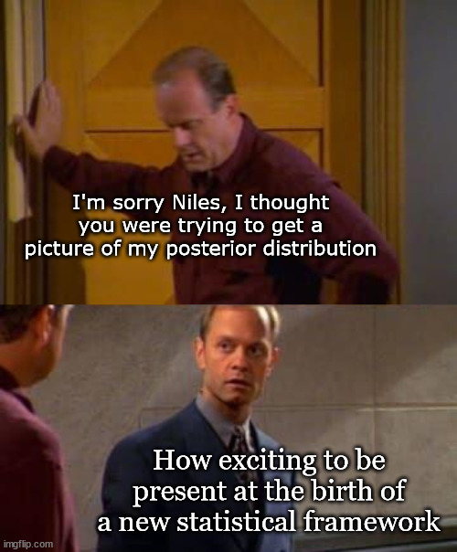

library("bayesrules")
library("gt")
library("janitor")
library("patchwork")
library("skimr")
library("tidyverse")
tips_df <- readr::read_csv("tips.csv")Tips Data Set
source: Kaggle
- “The data was reported in a collection of case studies for business statistics. Bryant, P. G. and Smith, M (1995) Practical Data Analysis: Case Studies in Business Statistics. Homewood, IL: Richard D. Irwin Publishing
context: “One waiter recorded information about each tip he received over a period of a few months working in one restaurant. In all he recorded 244 tips.”
head(tips_df)# A tibble: 6 × 7
total_bill tip sex smoker day time size
<dbl> <dbl> <chr> <chr> <chr> <chr> <dbl>
1 17.0 1.01 Female No Sun Dinner 2
2 10.3 1.66 Male No Sun Dinner 3
3 21.0 3.5 Male No Sun Dinner 3
4 23.7 3.31 Male No Sun Dinner 2
5 24.6 3.61 Female No Sun Dinner 4
6 25.3 4.71 Male No Sun Dinner 4str(tips_df, give.attr = FALSE)spc_tbl_ [244 × 7] (S3: spec_tbl_df/tbl_df/tbl/data.frame)
$ total_bill: num [1:244] 17 10.3 21 23.7 24.6 ...
$ tip : num [1:244] 1.01 1.66 3.5 3.31 3.61 4.71 2 3.12 1.96 3.23 ...
$ sex : chr [1:244] "Female" "Male" "Male" "Male" ...
$ smoker : chr [1:244] "No" "No" "No" "No" ...
$ day : chr [1:244] "Sun" "Sun" "Sun" "Sun" ...
$ time : chr [1:244] "Dinner" "Dinner" "Dinner" "Dinner" ...
$ size : num [1:244] 2 3 3 2 4 4 2 4 2 2 ...skimr::skim(tips_df)| Name | tips_df |
| Number of rows | 244 |
| Number of columns | 7 |
| _______________________ | |
| Column type frequency: | |
| character | 4 |
| numeric | 3 |
| ________________________ | |
| Group variables | None |
Variable type: character
| skim_variable | n_missing | complete_rate | min | max | empty | n_unique | whitespace |
|---|---|---|---|---|---|---|---|
| sex | 0 | 1 | 4 | 6 | 0 | 2 | 0 |
| smoker | 0 | 1 | 2 | 3 | 0 | 2 | 0 |
| day | 0 | 1 | 3 | 4 | 0 | 4 | 0 |
| time | 0 | 1 | 5 | 6 | 0 | 2 | 0 |
Variable type: numeric
| skim_variable | n_missing | complete_rate | mean | sd | p0 | p25 | p50 | p75 | p100 | hist |
|---|---|---|---|---|---|---|---|---|---|---|
| total_bill | 0 | 1 | 19.79 | 8.90 | 3.07 | 13.35 | 17.8 | 24.13 | 50.81 | ▃▇▃▁▁ |
| tip | 0 | 1 | 3.00 | 1.38 | 1.00 | 2.00 | 2.9 | 3.56 | 10.00 | ▇▆▂▁▁ |
| size | 0 | 1 | 2.57 | 0.95 | 1.00 | 2.00 | 2.0 | 3.00 | 6.00 | ▇▂▂▁▁ |
Scenario 1: Discrete Prior
Today we are going to explore how prevalent smoking used to be in restaurants? What percentage of customers smoked in restaurants? We can start with the following guesses
- 25%
- 50%
- 75%
Prior Model
| \(\pi\) | 0.25 | 0.50 | 0.75 | total |
|---|---|---|---|---|
| \(f(\pi)\) | 1/3 | 1/3 | 1/3 | 1 |
- uniform prior
- e.g. guessing the probability that the percentage of customers that smoked was 75% was \(\frac{1}{3}\)
Discrete Probability Model
Let \(Y\) be a discrete random variable. The probability model of \(Y\) is specified by a probability mass function (pmf) \(f(y)\). This pmf defines the probability of any given outcome \(y\),
\[f(y) = P(Y = y)\]
- \(0 \leq f(y) \leq 1\)
- \(\sum f(y) = 1\)
Observed Data
Looking at the last 9 observations in the data set, 4 of the customers were smokers.
| total_bill | tip | sex | smoker | day | time | size |
|---|---|---|---|---|---|---|
| 10.07 | 1.25 | Male | No | Sat | Dinner | 2 |
| 12.60 | 1.00 | Male | Yes | Sat | Dinner | 2 |
| 32.83 | 1.17 | Male | Yes | Sat | Dinner | 2 |
| 35.83 | 4.67 | Female | No | Sat | Dinner | 3 |
| 29.03 | 5.92 | Male | No | Sat | Dinner | 3 |
| 27.18 | 2.00 | Female | Yes | Sat | Dinner | 2 |
| 22.67 | 2.00 | Male | Yes | Sat | Dinner | 2 |
| 17.82 | 1.75 | Male | No | Sat | Dinner | 2 |
| 18.78 | 3.00 | Female | No | Thur | Dinner | 2 |
tail(tips_df, 9) |>
gt() |>
tab_style(locations = cells_body(columns = smoker),
style = list(cell_fill(color = "gray80"))) |>
tab_style(locations = cells_body(columns = smoker,
rows = smoker == "Yes"),
style = list(cell_text(color = "red")))Binomial Distribution
Binomial Distribution
Let random variable \(Y\) be the number of successes in a fixed number of trials \(n\). Assume that the trials are independent and that the probability of success in each trial is \(\pi\). Then the conditional dependence of \(Y\) on \(\pi\) can be modeled by the Binomial model with parameters \(n\) and \(\pi\). In mathematical notation:
\[Y|\pi \sim \text{Bin}(n,\pi)\] where \(\sim\) can be read as “modeled by”. Correspondingly, the binomial model is specified by the conditional pmf
\[f(y|\pi) = \binom{n}{y}\pi^{y}(1-\pi)^{n-y} \text{ for } y \in \{0, 1, 2, ..., n\}\] where \(\binom{n}{y} = \displaystyle\frac{n!}{y!(n-y)!}\)
In this example of \(Y\) smokers in \(n=9\) customers with probability \(\pi\) of smokers,
\[Y|\pi \sim \text{Bin}(9,\pi)\] \[f(y|\pi) = \binom{9}{y}\pi^{y}(1-\pi)^{9-y} \text{ for } y \in \{0, 1, 2, ..., 9\}\]
Conditional PMFs

highlight_col <- 0:9 == 4
df_25 <- data.frame(k = 0:9, f_y_pi = dbinom(0:9, 9, 0.25), highlight_col)
df_50 <- data.frame(k = 0:9, f_y_pi = dbinom(0:9, 9, 0.50), highlight_col)
df_75 <- data.frame(k = 0:9, f_y_pi = dbinom(0:9, 9, 0.75), highlight_col)
plot_25 <- df_25 |>
ggplot(aes(x = k, y = f_y_pi, fill = highlight_col)) +
geom_col(show.legend = FALSE) +
labs(title = "Bin(9,0.25)") +
scale_x_continuous(name = "customers",
breaks = 0:9,
labels = as.character(0:9)) +
theme_minimal()
plot_50 <- df_50 |>
ggplot(aes(x = k, y = f_y_pi, fill = highlight_col)) +
geom_col(show.legend = FALSE) +
labs(title = "Bin(9,0.50)") +
scale_x_continuous(name = "customers",
breaks = 0:9,
labels = as.character(0:9)) +
theme_minimal()
plot_75 <- df_75 |>
ggplot(aes(x = k, y = f_y_pi, fill = highlight_col)) +
geom_col(show.legend = FALSE) +
labs(title = "Bin(9,0.75)") +
scale_x_continuous(name = "customers",
breaks = 0:9,
labels = as.character(0:9)) +
theme_minimal()
# patchwork
plot_25 + plot_50 + plot_75Likelihoods
With the observed data \(Y = 4\) out of \(n = 9\) customers, for \(\pi = \{0.25, 0.50, 0.75\}\), \[L(\pi|y = 4) = f(y = 4|\pi) = \binom{9}{4}\pi^{4}(1-\pi)^{5}\]
\[L(\pi = 0.25|y = 4) = \binom{9}{4}(0.25)^{4}(1-0.25)^{5} \approx 0.1168\] \[L(\pi = 0.50|y = 4) = \binom{9}{4}(0.50)^{4}(1-0.50)^{5} \approx 0.2461\] \[L(\pi = 0.75|y = 4) = \binom{9}{4}(0.75)^{4}(1-0.75)^{5} \approx 0.0389\]
| \(\pi\) | 0.25 | 0.50 | 0.75 | total |
|---|---|---|---|---|
| \(f(\pi)\) | 1/3 | 1/3 | 1/3 | 1 |
| \(L(\pi|y=4)\) | 0.1168 | 0.2461 | 0.0389 | 0.4018 |
Bayesian Concepts
\[\text{posterior} = \frac{\text{prior} * \text{likelihood}}{\text{normalizing constant}}\]
For observations \(\vec{y}\) and probabilities \(\vec{\pi}\),
\[f(\pi|y) = \frac{f(\pi)L(\pi|y)}{f(y)} \propto f(\pi)L(\pi|y)\]
Normalizing Constant
\[f(y = 4) = \displaystyle\sum_{\pi\in\{0.25, 0.50, 0.75\}} L(\pi|y=4) \cdot f(\pi)\]
\[f(y = 4) = \displaystyle\frac{0.1168}{3} + \displaystyle\frac{0.2461}{3} + \displaystyle\frac{0.0389}{3} \approx 0.1339\]
Posterior Distribution
\[f(\pi|y=4) = \displaystyle\frac{f(\pi)L(\pi|y=4)}{f(y=4)} \text{ for } \pi \in \{0.25, 0.50, 0.75 \}\] \[f(\pi=0.25|y=4) = \displaystyle\frac{(1/3)(0.1168)}{0.1339} \approx 0.2907\] \[f(\pi=0.50|y=4) = \displaystyle\frac{(1/3)(0.2461)}{0.1339} \approx 0.6126\] \[f(\pi=0.75|y=4) = \displaystyle\frac{(1/3)(0.0389)}{0.1339} \approx 0.0968\]
| \(\pi\) | 0.25 | 0.50 | 0.75 | total |
|---|---|---|---|---|
| \(f(\pi)\) | 1/3 | 1/3 | 1/3 | 1 |
| \(L(\pi|y=4)\) | 0.1168 | 0.2461 | 0.0389 | 0.4018 |
| \(f(\pi|y=4)\) | 0.2907 | 0.6126 | 0.0968 | 1 |
Computer Simulation
# define possible smoker proportions
smokers <- data.frame(pi = c(0.25, 0.50, 0.75))
# define prior model
prior <- c(1/3, 1/3, 1/3)
# simulate 10000 values of pi from the prior
set.seed(320)
smoker_sim <- sample_n(smokers, size = 10000, weight = prior, replace = TRUE)
# simulate 10000 samples of customers
smoker_sim <- smoker_sim |>
mutate(y = rbinom(10000, size = 9, prob = pi))So far, the simulation yields a data frame that looks like
head(smoker_sim) pi y
1 0.50 5
2 0.25 2
3 0.50 6
4 0.25 3
5 0.50 4
6 0.50 4# summarize the prior
smoker_sim |>
tabyl(pi) |>
adorn_totals("row") pi n percent
0.25 3283 0.3283
0.5 3345 0.3345
0.75 3372 0.3372
Total 10000 1.0000# plot y by pi
ggplot(smoker_sim, aes(x = y)) +
stat_count(aes(y = after_stat(prop))) +
facet_wrap(~ pi)
# focus on simulations with y = 4
four_smokers <- smoker_sim %>%
filter(y == 4)
# summarize the posterior approximation
four_smokers %>%
tabyl(pi) %>%
adorn_totals("row") pi n percent
0.25 408 0.3000000
0.5 813 0.5977941
0.75 139 0.1022059
Total 1360 1.0000000# plot the posterior approximation
ggplot(four_smokers, aes(x = pi)) +
geom_bar()
Scenario 2: Continuous Prior
Instead of fixating on particular guesses for \(\pi\), let us broaden the scope to allow the underlying probability to be any number between zero and one.
\[\pi \in [0,1]\]
Continuous Probability Model
Let \(\pi\) be a continuous random variable with probability density function \(f(\pi)\), then \(f(\pi)\) has the following properties.
- \(f(\pi) \geq 0\)
- \(\int_{\pi} \! f(\pi) \, d\pi = 1\)
- \(P(a \leq \pi \leq b) = \int_{a}^{b} \! f(\pi) \, d\pi\)
Beta Distribution
Beta Distribution
Let \(\pi \in [0,1]\), then the variability in \(\pi\) may be modeled by a Beta distribution with shape hyperparameters \(\alpha > 0\) and \(\beta > 0\)
\[\pi \sim \text{Beta}(\alpha, \beta)\] with probability density function
\[f(\pi) = \displaystyle\frac{\Gamma(\alpha + \beta)}{\Gamma(\alpha)\Gamma(\beta)}\pi^{\alpha-1}(1-\pi)^{\beta-1}\]
where the gamma function
- \(\Gamma(z) = \displaystyle\int_{0}^{\infty} \! x^{z-1}e^{-x} \, dx\)
- \(\Gamma(z + 1) = z\Gamma(z)\)
Corollary
When \(z\) is a positive integer, then \[\Gamma(z) = (z-1)!\] That is, the gamma function is a generalization of the factorial.
Hyperparameters
A hyperparameter is a parameter used in a prior model.
Explore!
Matt Bognar at the University of Iowa created this great webapp to explore the beta distribution.
Uniform Distribution
When it is equally plausible for \(\pi\) to take on any value between zero and one, we can model \(\pi\) by the standard uniform distribution
\[\pi \sim \text{Unif}(0,1)\]
with pdf \(f(\pi) = 1\) for \(\pi \in [0,1]\). The \(\text{Unif}(0,1)\) distribution is a special case of the beta distribution when \(\alpha = 1\) and \(\beta = 1\)
\[\text{Unif}(0,1) = \text{Beta}(1,1)\]
Sample Statistics
For a beta distribution, \(\pi \sim \text{Beta}(\alpha, \beta)\)
- expected value: \(\text{E}(\pi) = \displaystyle\frac{\alpha}{\alpha + \beta}\)
- variance: \(\text{Var}(\pi) = \displaystyle\frac{\alpha\beta}{(\alpha + \beta)^{2}(\alpha + \beta + 1)}\)
Tuning the Beta Prior
Here, let us use that sample of observations where 4 out of the 9 customers where smokers. We might then try to align this sample proportion \(\frac{4}{9}\) with the expected value
\[\displaystyle\frac{\alpha}{\alpha + \beta} = \displaystyle\frac{4}{9} \quad\rightarrow\quad \alpha = 4, \quad \beta = 5\]
to create a beta model \(\pi \sim \text{Beta}(4, 5)\)
bayesrules::plot_beta(4,5)
We can compute the variance
\[\text{Var}(\pi) = \displaystyle\frac{\alpha\beta}{(\alpha + \beta)^{2}(\alpha + \beta + 1)} = \displaystyle\frac{4 \cdot 5}{(4 + 5)^{2}(4 + 5 + 1)} \approx 0.0247\]
Binomial Data Model
Suppose that we obtain a larger sample of observations with \(n = 25\) customers. The number of smokers, denoted by random variable \(Y\), may have a binomial model conditional on probability \(\pi\),
\[Y|\pi \sim \text{Bin}(25, \pi)\]
with conditional pmf over \(y \in \{0, 1, ..., 25\}\), \[f(y|\pi) = P(Y = y|\pi) = \binom{25}{y}\pi^{y}(1-\pi)^{25-y}\]
Likelihood
Suppose that in that sample of \(n = 25\) customers, we observe that \(y = 7\) of those customers were smokers. Our likelihood function is then
\[L(\pi|y = 7) = \binom{25}{7}\pi^{7}(1-\pi)^{18}\]

pi <- seq(0, 1, 0.01)
L_pi_y <- dbinom(7, 25, pi)
df_for_graph <- data.frame(pi, L_pi_y)
df_for_graph |>
ggplot(aes(x = pi, y = L_pi_y)) +
geom_line() +
labs(title = "Likelihood function",
subtitle = "y = 7, n = 25",
caption = "SML 320")Beta-Binomial Model
Claim: With probability \(\pi \in [0,1]\) and random variable \(Y\) representing the number of “successes” in \(n\) trials, if the behavior is modeled with prior distribution and likelihood
\[\begin{array}{rcl} \pi & \sim & \text{Beta}(\alpha, \beta) \\ Y|\pi & \sim & \text{Bin}(n,\pi) \\ \end{array}\]
then the posterior distribution can be modeled with an updated beta distribution
\[\pi|(Y=y) \sim \text{Beta}(\alpha + y, \beta + n - y)\]
with sample statistics
\[\begin{array}{rcl} \text{E}(\pi|Y=y) & = & \displaystyle\frac{\alpha + y}{\alpha + \beta + n} \\ \text{Var}(\pi|Y=y) & = & \displaystyle\frac{(\alpha +y)(\beta + n - y)}{(\alpha + \beta + n)^{2}(\alpha + \beta + n + 1)} \\ \end{array}\]
Partial Proof
With the conditional pmf
\[f(\pi) = \displaystyle\frac{\Gamma(\alpha + \beta)}{\Gamma(\alpha)\Gamma(\beta)}\pi^{\alpha-1}(1-\pi)^{\beta-1}\] and likelihood function
\[L(\pi|y) = \binom{n}{y}\pi^{y}(1-\pi)^{n-y}\]
it follows from Bayes’ Rule that the posterior distribution
\[\begin{array}{rcl} f(\pi|y) & \propto & f(\pi)L(\pi|y) \\ ~ & = & \displaystyle\frac{\Gamma(\alpha + \beta)}{\Gamma(\alpha)\Gamma(\beta)}\pi^{\alpha-1}(1-\pi)^{\beta-1} \cdot \binom{n}{y}\pi^{y}(1-\pi)^{n-y} \\ ~ & \propto & \pi^{(\alpha + y)-1}(1-\pi)^{(\beta+n-y)-1} \\ \end{array}\]
where that last expression is the unnormalized posterior pdf. We observe that it has the same structure of the normalized \(\text{Beta}(\alpha + y, \beta + n - y)\) pdf
\[f(\pi|y) = \displaystyle\frac{\Gamma(\alpha+\beta+n)}{\Gamma(\alpha+y)\Gamma(\beta+n-y)} \pi^{(\alpha + y)-1}(1-\pi)^{(\beta+n-y)-1}\]
Beta Posterior
By the above theory, having started with a \(\text{Beta}{(4,5)}\) prior, and then observing \(y = 7\) smokers among \(n = 25\) customers
\[\alpha = 4, \quad \beta = 5, \quad y = 7, \quad n = 25\]
our posterior distribution can be modeled with
\[\pi|(Y=y) \sim \text{Beta}(\alpha + y, \beta + n - y) = \text{Beta}(11, 23)\]
bayesrules::plot_beta(11,23)

Putting it All Together
The bayesrules package (from the textbook authors) provide additonal helper functions for this procedure of modeling with a beta-binomial model.
bayesrules::summarize_beta_binomial(alpha, beta, y, n)bayesrules::plot_beta_binomial(alpha, beta, y, n)summarize_beta_binomial(alpha = 4, beta = 5, y = 7, n = 25) |>
mutate_if(is.numeric, round, digits = 4) model alpha beta mean mode var sd
1 prior 4 5 0.4444 0.4286 0.0247 0.1571
2 posterior 11 23 0.3235 0.3125 0.0063 0.0791plot_beta_binomial(alpha = 4, beta = 5, y = 7, n = 25) +
theme_minimal()
Classroom Activity
- In Canvas, find the
templatesfolder- SML 320 –> Files –> code templates
- Download today’s files
- template:
03_beta_binomial_template.qmd - data file:
tips.csv
- template:
- Place both files into the same folder on your computer
- advice: make a “SML 320” folder on your computer desktop
- double-click the QMD file
- this opens
RStudioand sets the directory location
- this opens
- try to run the code as-is
- use
install.packages()when needed
- use
sessionInfo()R version 4.3.0 (2023-04-21 ucrt)
Platform: x86_64-w64-mingw32/x64 (64-bit)
Running under: Windows 10 x64 (build 19045)
Matrix products: default
locale:
[1] LC_COLLATE=English_United States.utf8
[2] LC_CTYPE=English_United States.utf8
[3] LC_MONETARY=English_United States.utf8
[4] LC_NUMERIC=C
[5] LC_TIME=English_United States.utf8
time zone: America/New_York
tzcode source: internal
attached base packages:
[1] stats graphics grDevices utils datasets methods base
other attached packages:
[1] lubridate_1.9.2 forcats_1.0.0 stringr_1.5.0 dplyr_1.1.3
[5] purrr_1.0.2 readr_2.1.4 tidyr_1.3.0 tibble_3.2.1
[9] ggplot2_3.4.3 tidyverse_2.0.0 skimr_2.1.5 patchwork_1.1.2
[13] janitor_2.2.0 gt_0.9.0 bayesrules_0.0.2
loaded via a namespace (and not attached):
[1] gridExtra_2.3 inline_0.3.19 rlang_1.1.1
[4] magrittr_2.0.3 snakecase_0.11.0 matrixStats_1.0.0
[7] e1071_1.7-13 compiler_4.3.0 loo_2.6.0
[10] callr_3.7.3 vctrs_0.6.3 reshape2_1.4.4
[13] pkgconfig_2.0.3 crayon_1.5.2 fastmap_1.1.1
[16] ellipsis_0.3.2 labeling_0.4.3 utf8_1.2.3
[19] threejs_0.3.3 promises_1.2.1 rmarkdown_2.24
[22] tzdb_0.4.0 markdown_1.8 ps_1.7.5
[25] nloptr_2.0.3 bit_4.0.5 xfun_0.40
[28] jsonlite_1.8.7 later_1.3.1 parallel_4.3.0
[31] prettyunits_1.1.1 R6_2.5.1 dygraphs_1.1.1.6
[34] stringi_1.7.12 StanHeaders_2.26.26 boot_1.3-28.1
[37] Rcpp_1.0.11 rstan_2.21.8 knitr_1.43
[40] zoo_1.8-12 base64enc_0.1-3 bayesplot_1.10.0
[43] httpuv_1.6.11 Matrix_1.5-4 splines_4.3.0
[46] igraph_1.4.3 timechange_0.2.0 tidyselect_1.2.0
[49] rstudioapi_0.15.0 yaml_2.3.7 codetools_0.2-19
[52] miniUI_0.1.1.1 processx_3.8.1 pkgbuild_1.4.0
[55] lattice_0.21-8 plyr_1.8.8 withr_2.5.2
[58] shiny_1.7.5 groupdata2_2.0.2 evaluate_0.21
[61] survival_3.5-5 proxy_0.4-27 RcppParallel_5.1.7
[64] xts_0.13.1 xml2_1.3.5 pillar_1.9.0
[67] DT_0.28 stats4_4.3.0 shinyjs_2.1.0
[70] generics_0.1.3 vroom_1.6.3 hms_1.1.3
[73] rstantools_2.3.1 munsell_0.5.0 scales_1.2.1
[76] minqa_1.2.5 gtools_3.9.4 xtable_1.8-4
[79] class_7.3-21 glue_1.6.2 tools_4.3.0
[82] shinystan_2.6.0 lme4_1.1-33 colourpicker_1.2.0
[85] grid_4.3.0 crosstalk_1.2.0 colorspace_2.1-0
[88] nlme_3.1-162 repr_1.1.6 cli_3.6.1
[91] fansi_1.0.4 gtable_0.3.4 sass_0.4.7
[94] digest_0.6.33 farver_2.1.1 htmlwidgets_1.6.2
[97] htmltools_0.5.6 lifecycle_1.0.4 mime_0.12
[100] rstanarm_2.21.4 bit64_4.0.5 shinythemes_1.2.0
[103] MASS_7.3-58.4 I doubt that any of my students are Frasier fans, but I made this for our class anyway
